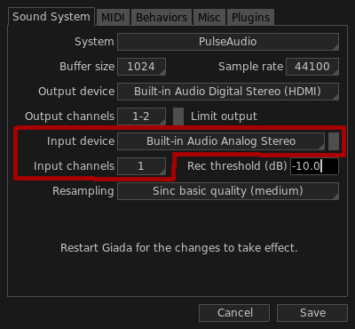
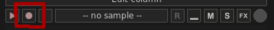
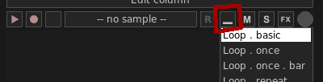
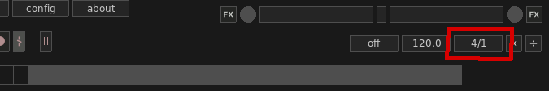
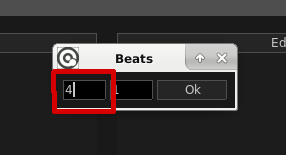
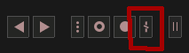
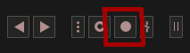
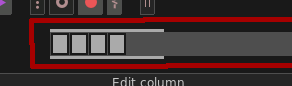

In this tutorial you will learn how to use the free loop-length mode for live audio recording. Added in Giada 0.18, the free loop-length mode allows you to freely record audio from your sound card without time boundaries. When you are done with the recording, Giada will automatically adjust the speed of the sequencer according to the duration of your performance.
The first thing to do is to enable the input device in your sound card. Open the Configuration window from the main menu and select the Sound System tab. You will be prompted with the sound card configuration as in the image below:

Select a device from the Input device drop-down menu and the channels you want to record from in the Input channels menu. Save the configuration and restart Giada for the changes to take effect.
You will need a sample channel in order to record audio. Click on the Edit column button on top of any column on the main window, then select Add Sample channel from the drop-down menu: a new empty sample channel will appear in the current column.
Now arm it, so that incoming audio will be recorded in it. Press the arm button on the left side:

Finally, select a proper loop mode for the channel: you want it to loop once the recording is over. Select the loop mode from the menu on the right:

The loop mode called Loop . basic is a good fit.
Giada uses the current number of beats in your project to compute the maximum length of a free-loop length session, as well as the final BPM when the recording is done. By default the number of beats in a new project is set to 4: you can adjust it by clicking on the beats/bars box on the right side of the main window:

A new window will pop up where you can edit values:

Type a value between 1 and 32 in the first box on the left and then click Ok to apply the changes.
The free loop-length mode can be enabled only if there are no other audio samples in your project. Click on the rightmost button in the main transport to enable it:

Grab your instrument! When you are ready to go, click on the audio recording button (or press the corresponding keyboard button) located in the main transport to start the recording:

You will notice how the sequencer will activate right away, with blinking cursors and two bars running from left to right:

The running bars show the time progression of your audio recording. If they reach the right side, your recording automatically stops as there's no more audio space for it.
When you are satisfied with your performance, press the audio recording button again to terminate the recording session. Three things will happen at this point:
The sequencer turns back to normal and starts playing;
the sample channel gets filled with the recorded audio data;
Giada adjusts the number of BPM of the current project to the length of your audio recording.
You can now add more elements to your song on top of the loop you've just recorded, either manually or live-recorded. Just remember that the free loop-length mode is now disabled: it is allowed only when you start a new project from scratch.